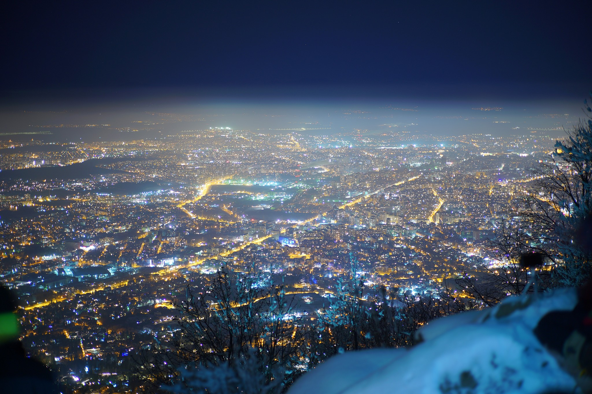
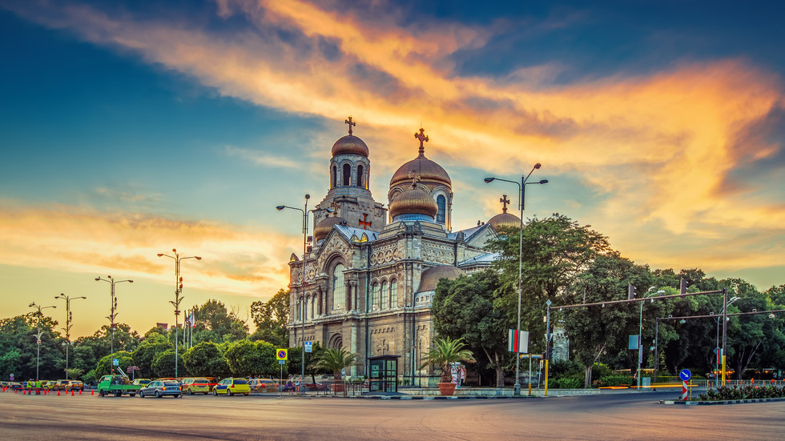
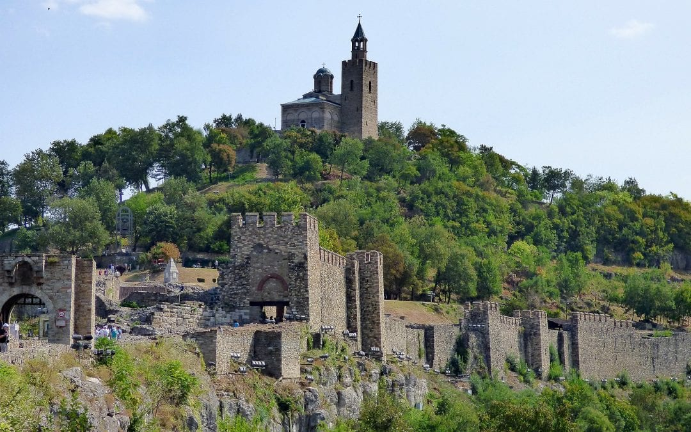
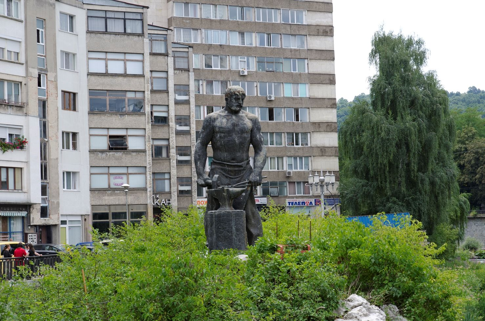

Best Places to Visit in Bulgaria.Rolling down from the pine-clad massifs of the Balkan Mountains and the Rhodope ranges to meet the sparkling blues of the Black Sea, Bulgaria offers everything from sun-kissed beaches to enthralling historical narratives, buzzing party towns to snow-shrouded ski resorts between its borders. In this guide to the 15 best places to visit in the country, we take a look at all the major hotspots that should be on anyone’s Bulgarian bucket list this year
The best cities to visit in Bulgaria

1.Plovdiv

Draped over seven hills along the courses of the beautiful Maritsa River, Plovdiv runs the gamut of historical sights, encompassing Roman amphitheatres, Thracian fortresses, honorific monuments to Bulgaria’s own Krum the Fearsome, National Revival churches and even the occasional Soviet tenement between city limits.
The piece de resistance has to be the old world historic centre though; a Game of Thrones-esque pallet of stone-clad keeps and winding alleyways, Byzantine arches and hidden squares.
Oh, and Plovdiv’s nightlife beckons partiers after hours, as the coffee culture haunts turn hedonist, fuelling nights with indie, jazz and oodles of Balkan beers!
2.Burgas

Burgas is one of the favoured gateways to the southern stretches of the Black Sea Coast. A far cry from the ancient and historic centres that pepper the country elsewhere, it’s a largely modern affair of Art Deco rises and manicured parks on the edge of the sea.
It’s also home to some of the most lively music festivals in Bulgaria, like the rollicking Spirit of Burgas that erupts each year in the summer.
North Beach is the most popular stretch of sand in the town, while Burgas also has another trick up its sleeve: the majestically beautiful trio of lakes that range from the bird-spotting paradise of Vaya to the west to the saline waters of Atanasovsko to the north.
3.Sofia

The sprawling capital of Bulgaria is something of a patchwork of its own past. Around its edges rise the great brutalist monuments to Soviet rule; endless streams of cookie cutting high-rises.
Closer to the centre and the ancient remains of the Serdica Fort and the Roman-Byzantine Church of St George sit in the shadow of Stalinist municipal buildings.
And then there are the iconic Orthodox domes and gilded edifices of the Alexander Nevsky Cathedral, which glisten under the snow-packed tops of Vitosha Mountain in the distance.
It’s all very eclectic, and rarely fails to impress travelers that opt to linger here a little while.
4.Varna

The sun-splashed favourite of local Bulgarians heading out of Sofia and Plovdiv for the summer, Varna is much more than just your run-of-the-mill resort town on the edge of the Black Sea. Yes sir, with a long and enthralling history, oodles of crumbling Roman bathhouses and elaborate Orthodox architecture (like the almost unpronounceable Dormition of the Mother of God Cathedral), the city appeals to history buffs and culture vultures as well as sun seekers.
Of course, the beaches are still a big factor, and one bustling sand-side promenade beckons travelers with oodles of seafood restaurants and cocktail bars, while lively clubs erupt right on the edge of the shore after dark.
5.Veliko Tarnovo

The legendary City of the Tsars stands aloft on the edge of the rising foothills of Bulgaria’s northern mountains. Bisected by the S-shaped meanders of the Yantra River, the town’s setting is nothing short of breathtaking, with terraces of terracotta-coloured roofs looming over the waterways below.
The pretty cobblestone lanes and half-timbered homes of this one’s old town are prime examples of what’s now known as the Tarnovo school, which developed as the Second Bulgarian Empire boomed in the Middle Ages.
That means travelers here experience a mixture of natural beauty – courtesy of the wild coniferous woods that blanket the landscapes all around – and unbridled culture and history, oozing from the Tsarevets capitol and the clutch of gorgeous Byzantine churches.
Bonus:Gabrovo

Gabrovo is a city in central northern Bulgaria, the administrative centre of Gabrovo Province.
It is situated at the foot of the central Balkan Mountains, in the valley of the Yantra River, and is known as an international capital of humour and satire (see Gabrovo humour), as well as noted for its Bulgarian National Revival architecture. Gabrovo is also known as the longest city in Bulgaria, stretching over 25 km along the Yantra, yet reaching only 1 km (0.6 mi) in width at places. The geographic center of Bulgaria - Uzana is located near the city.
According to the most widespread legend, Gabrovo was founded by a blacksmith called Racho, close to whose fireplace a hornbeam rose, so the settlement acquired its name, from the Slavic word gabar ("hornbeam") + the Slavic suffix -ovo.